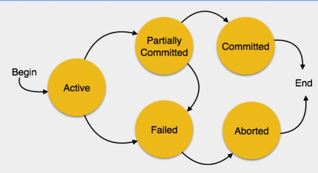

# <div style="text-align:center;font-size: 3em;line-height:3em;"> INFO 610 Fall 2020 </div> <div style="text-align:center;font-size: 1.5em;line-height:1.8em;">Week 8</div> <div style="text-align:center;font-size: 1em;line-height:1.8em;">ACID & Transactions</div> <div style="text-align:center;font-size: 1.9em;line-height:3em;">chrisfauerbach.github.io/info610_fall_2020/</div> --- # ACID Properties of a Relational Database System * A transaction is a very small unit of a program and it may contain several low level tasks. * A transaction in a database system must maintain ACID Properties in order to ensure accuracy, completeness and data integrity. * Atomicity * Consistency * Durability * Isolation --- # Atomicity * This property states that a transaction must be treated as an atomic unit, that is, either all of its operations are executed or none are. * There must be no state in a database where a transaction is left partially completed. * States should be defined either before the execution of the transaction or after the execution/abortion/failure of the transaction --- # Consistency * The database must remain in a consistent state after any transaction. * No transaction should have any adverse effect on the data residing in the database. * If the database was in a consistent state before the execution of a transaction, it must remain consisten after the execution of the transaction as well. --- # Durability * The database should be durable enough to hold all its latest updates even if the system fails or restarts. * If a transaction updates a chunk of data in a database and commits, then the database will hold the modified data. * If a transaction commits but the systems fails before the data could be written on to the disk, then all data will be updated once the system springs back into action. --- # Isolation * In a database system where more than one transaction are being executed simultaneously and in parallel, the property of isolation states that all transactions will be carried out and executed as if it is the only transaction in the system. * No transaction will affect the existence of another transaction. --- # Serializability When multiple transactions are being executed by the operating system in a multiprogramming environment, there are possibilities that instructions in one transaction are interleaved with some other transaction. * Schedule - A chronological execution sequence of a transaction is called a schedule. A schedule can have many transactions in it, each comprising of a number of instructions/tasks. * Serial Schedule - It is a schedule in which transactions are aligned in such a way that one transaction is executed first. When the first transaction completes its cycle, the next transaction is executed. Transactions are ordered one after the other. This type of schedule is called a serial schedule, as transactions are executed in a serial manner. If transactions aren't scheduled serially, but instead are parallelized, then the database can become inconsistent due to each transactions potentially altering the same records. --- # States of Transactions A transaction in a database can be in one fo the following states:  --- # Active * A transaction is being executed. This is the initial state of every transaction. --- # Partially Committed * When a transaction executes its final operation, it is said to be in a partially committed state. --- # Failed * A transaction is said to be in a failed state if any of the checks made by the database recovery system fails. A failed transaction can no longer proceed further. --- # Aborted * If any of the checks fail and the transaction has reached a failed state, then the recovery manager rolls back all its write operations on the database back to its original state where it was prior to the execution of the transaction. * Transactions in this state are called aborted. The database recoery module can select one of the two operations after a transaction aborts * Re-start * Kill the transaction --- # Committed * If all operations are successful, it is said to be committed. All its effects are now permanently established on the database system. --- # Postgresql Transactions For example, consider a bank database that contains balances for various customer accounts, as well as total deposit balances for branches. Suppose that we want to record a payment of $100.00 from Alice's account to Bob's account. Simplifying outrageously, the SQL commands for this might look like: ```sql UPDATE accounts SET balance = balance - 100.00 WHERE name = 'Alice'; UPDATE branches SET balance = balance - 100.00 WHERE name = (SELECT branch_name FROM accounts WHERE name = 'Alice'); UPDATE accounts SET balance = balance + 100.00 WHERE name = 'Bob'; UPDATE branches SET balance = balance + 100.00 WHERE name = (SELECT branch_name FROM accounts WHERE name = 'Bob'); ``` --- # Uh oh - Failed! What happens if something breaks after line two? ```sql UPDATE accounts SET balance = balance - 100.00 WHERE name = 'Alice'; UPDATE branches SET balance = balance - 100.00 WHERE name = (SELECT branch_name FROM accounts WHERE name = 'Alice'); UPDATE accounts SET balance = balance + 100.00 WHERE name = 'Bob'; UPDATE branches SET balance = balance + 100.00 WHERE name = (SELECT branch_name FROM accounts WHERE name = 'Bob'); ``` --- # Let's fix it: ```sql BEGIN; UPDATE accounts SET balance = balance - 100.00 WHERE name = 'Alice'; -- etc etc COMMIT; ``` * BEGIN - Starts a database transaction, explicitly. * ROLLBACK - Aborts the existing transaction, rolling back all data changes from this transaction. --- # Rollback Suppose we debit $100.00 from Alice's account, and credit Bob's account, only to find later that we should have credited Wally's account. We could do it using savepoints like this: <i>Savepoints</i> allow you to selectively discard parts of the transaction, while committing the rest. After defining a savepoint with SAVEPOINT, you can if needed roll back to the savepoint with ROLLBACK TO. ```sql BEGIN; UPDATE accounts SET balance = balance - 100.00 WHERE name = 'Alice'; SAVEPOINT my_savepoint; UPDATE accounts SET balance = balance + 100.00 WHERE name = 'Bob'; -- oops ... forget that and use Wally's account ROLLBACK TO my_savepoint; UPDATE accounts SET balance = balance + 100.00 WHERE name = 'Wally'; COMMIT; ``` --- --- ---